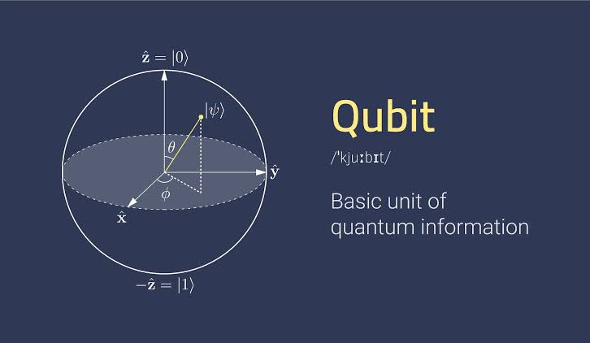

Sobre
A computação quântica é um campo da computação que utiliza princípios da mecânica quântica para realizar cálculos complexos.
Oferece o potencial de resolver certos problemas muito mais rapidamente do que os computadores clássicos, tirando partido de fenómenos quânticos como a superposição e o emaranhamento.
Em sua essência, a computação clássica depende de bits, que representam informações como 0 ou 1.
A computação quântica, por outro lado, usa bits quânticos ou qubits, que podem existir em vários estados simultaneamente devido à superposição.
Isto significa que um qubit pode representar 0 e 1 simultaneamente, permitindo processamento paralelo e maior poder computacional.
Duas linguagens comuns são Qiskit (para IBM Quantum) e Q# (para Microsoft Quantum Development Kit).
Existem também simuladores quânticos online que permitem que você experimente programação quântica sem a necessidade de hardware quântico real.
Aqui está uma visão geral de alto nível de como funciona a computação quântica:
Qubit:

Os computadores quânticos começam preparando qubits em um estado inicial conhecido, normalmente inicializado em 0 ou 1.
No entanto, devido à superposição, os qubits também podem existir em uma combinação de ambos os estados.
Portas Quânticas:
Semelhante às portas lógicas clássicas, as portas quânticas são aplicadas a qubits para manipular seus estados quânticos.
Essas portas realizam operações como inverter o estado do qubit, girar sua fase ou enredá-lo com outros qubits.
Antes de usar hardware quântico real, experimente um simulador quântico.
Isso permite que você ganhe experiência prática com programação quântica sem a complexidade adicional do hardware.
Superposição e Paralelismo:
Os computadores quânticos podem manipular vários qubits simultaneamente, aproveitando o conceito de superposição.
Isso permite que os computadores quânticos processem muitos resultados possíveis em paralelo, proporcionando uma aceleração potencial para determinados algoritmos.
Medição Quântica:
Para extrair informações úteis dos qubits, uma medição é realizada no final do cálculo.
Isso reduz a superposição de qubits em estados clássicos específicos (0 ou 1).
Os resultados da medição fornecem os resultados finais do cálculo.
É importante observar que construir e manter qubits estáveis é um desafio técnico significativo devido à natureza delicada dos estados quânticos.
Os computadores quânticos precisam ser protegidos contra interferências externas e requerem temperaturas extremamente baixas para manter a coerência.
A computação quântica ainda está em seus estágios iniciais e computadores quânticos práticos e de grande escala ainda não foram totalmente realizados.
No entanto, investigadores e cientistas estão a explorar ativamente as suas aplicações potenciais em vários campos, tais como criptografia, problemas de otimização, descoberta de medicamentos e simulação de sistemas quânticos.
No momento da minha última atualização de conhecimento, em janeiro de 2022, é importante observar que a Computação Quântica (QC) ainda é um campo em evolução,
E que o desenvolvimento de linguagens e estruturas de programação quântica está em andamento.
A partir de agora, linguagens de programação tradicionais como Python, Java e C# não foram projetadas diretamente para computação quântica.
A computação quântica requer um conjunto diferente de ferramentas e linguagens para aproveitar os princípios únicos da mecânica quântica.
Algumas linguagens e estruturas de programação quântica que foram desenvolvidas ou estão em desenvolvimento incluem:
Qiskit:
Desenvolvido pela IBM para uso com seus computadores quânticos. Ele usa Python para sua interface.
Cirq:
Desenvolvido pelo Google para projetar, simular e executar circuitos quânticos nos processadores quânticos do Google. Ele usa Python.
Você pode acessá-la em: https://quantumai.google/cirq
Kit de desenvolvimento Microsoft Quantum:
Inclui Q#, uma linguagem projetada especificamente para programação quântica. No entanto, pode ser integrado com linguagens como Python e C#.
Quipper:

Uma linguagem de programação funcional para computação quântica.
Comparar linguagens tradicionais como Python, Java e C# com linguagens de programação quântica envolve compreender as diferenças fundamentais na natureza da computação.
As linguagens clássicas são projetadas para computadores clássicos que operam com base em bits e lógica determinística.
As linguagens de programação quântica, por outro lado, lidam com qubits e exploram fenômenos quânticos como superposição e emaranhamento.
Na computação quântica, o foco geralmente está em algoritmos, em vez de procedimentos tradicionais passo a passo.
Algoritmos quânticos, como o algoritmo de Shor para fatorar grandes números ou o algoritmo de Grover para pesquisar um banco de dados não classificado, podem fornecer uma aceleração significativa para certos problemas.
Embora as linguagens clássicas continuem a ser essenciais para muitas tarefas de computação, as linguagens quânticas estão surgindo para resolver problemas que são adequados para algoritmos quânticos.
Vale a pena notar que a computação quântica ainda está nos estágios iniciais, e as implicações práticas e aplicações estão sendo exploradas ativamente por pesquisadores e desenvolvedores.